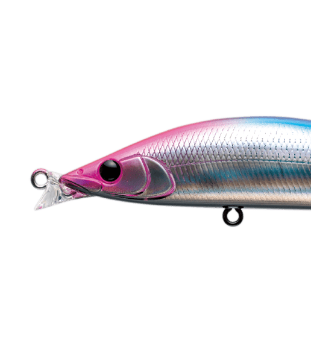
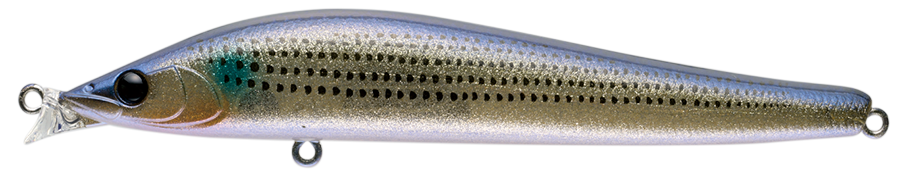
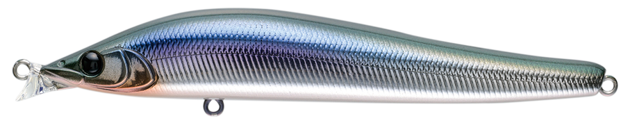
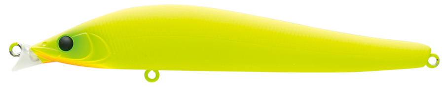
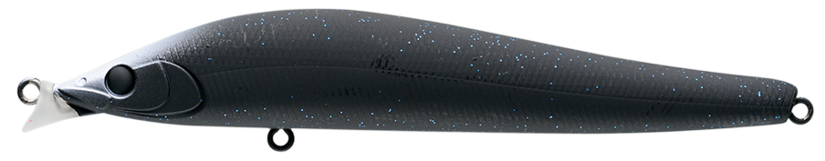
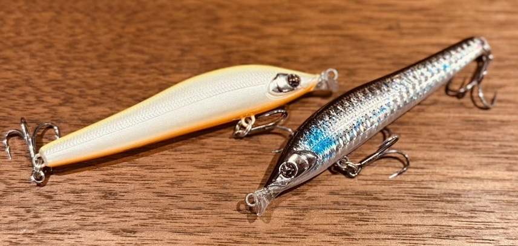

エルドール115F
（AILED'ORE115F）
エルドール115F（AILED'ORE115F）はAPIA（アピア）のフローティングミノーです。
「黄金の翼」を意味する名前のとおり、翼のように揚力を得る流線形ボディとタングステンボールで、シャローミノーの中でも抜群の飛距離を誇るモデル。水面下10〜30cmのシャローを、ウェーディングの河川・干潟で攻略するために作られた1本です。

画像出典:APIA公式HP
スペック
- メーカー
- APIA（アピア）
- タイプ
- フローティング（シャローミノー）
- 全長
- 115mm
- 自重
- 18g
- レンジ
- 10〜30cm
- フック
- #4×2（BKK FANGS-62UA）
- アクション
- ウォブンロール
- ターゲット
- シーバス
- 価格
- 2,178円（税込）
▼今すぐチェック

エルドール115Fの特徴
飛距離・レンジキープ・ジャークの3拍子がそろった、シャロー攻略用の115mmミノー
-
翼のような流線形ボディとタングステンボールで抜群の飛距離
独特の流線形デザインが翼のように揚力を得ることで、シャローミノーの中でも抜群の飛距離を実現。115mmクラスのフローティングミノーとしては圧倒的な飛距離で、遠くのシャローまで届けられる。
-
小型リップで水面下30cm前後をキープ
特徴的な小型リップは飛距離に貢献するだけでなく、リトリーブ時には水を逃がしてローリング主体のウォブンロールを生む。水面下30cm程のレンジをキープでき、10〜30cmのシャロー攻略に向く。
-
通称「エルジャーク」で食わせる
ロッドティップを軽く煽る程度のソフトなジャークで、左右へのダートに時折上昇アクションが交わる独特の動きを出せる。デイゲームだけでなくナイトゲームでもシャローのシーバスにアピールできる。
エルドール115Fの使い方
基本はただ巻き。小型リップがローリング主体のウォブンロールを生み、水面下30cm前後のレンジを自然にキープしてくれます。
ただ巻きで反応が無いときは、通称「エルジャーク」を試すのが定番。強くジャークするのではなく、ロッドティップを軽く煽る程度のソフトなジャークがキモで、左右へのダートに時折上昇アクションが混じる動きでシーバスにスイッチを入れます。
エルドール115Fの得意な状況
ウェーディングを主体とした河川・干潟のシャローが最大の出番。
水深の浅いエリアで、飛距離を出して広く探りたい状況で強い1本です。115mmの2フック仕様でランカーサイズにも対応しているので、大型を意識したシャローゲームでも安心して使えます。
ワンポイント
エルジャークは「弱めに、軽く」が基本です。強く煽りすぎるとダートが大きくなりすぎるので、ロッドティップだけを動かすイメージで入力すると、左右のダートと上昇アクションが出やすくなります。
ただ巻きとエルジャークを1キャストの中で組み合わせると、同じコースでも見せ方を変えられます。
エルドールシリーズの使い分け
| モデル | 全長／自重 | 得意な場面 |
|---|---|---|
| 85SSL | 85mm／10g | スローシンキング。小型ベイトパターンや、シャローをゆっくり探りたい場面に |
| 115F | 115mm／18g | フローティング。レンジ10〜30cmのシャローを飛距離で攻める（本記事のモデル） |
エルドールは、ベイトサイズやレンジに合わせてサイズとタイプを選べるシリーズです。85SSLの詳細はエルドール85SSLの記事で紹介しています。
人気カラー
エルドール115Fは全12色展開。シャローのシーバス狙いでオススメのカラーを厳選して紹介します。

ボラGLXシャローに多いボラ（イナッコ）パターンに合わせやすいナチュラル系。

パニックカタクチカタクチイワシを意識したベイトカラー。イワシが入っている時に。

どチャートチャートの高アピールカラー。マズメや濁り潮で存在感を出したい時に。

ナイトメアナイトゲームでシルエットを出しやすいダーク系カラー。
画像出典:APIA公式HP
エルドール115Fに似ているルアー
-

エルドール85SSL アピア 詳細はこちら＞同じエルドールシリーズの85mmスローシンキングモデル。115Fよりシルエットが小さく、小型ベイトパターンやゆっくり見せたい場面での持ち替えに。
-
 コモモSF-125
ima
詳細はこちら＞
コモモSF-125
ima
詳細はこちら＞
全長125mm・自重18gのシャローランナー。レンジ5〜50cmと近いシャロー帯を、投げて巻くだけで攻められる定番。ジャークよりただ巻き主体で探りたいときに。
-
 アイザー125F
ブルーブルー
詳細はこちら＞
アイザー125F
ブルーブルー
詳細はこちら＞
全長125mm・自重22gのシャローランナー。レンジ5〜30cmとほぼ同じシャロー帯を狙え、干潟・河口のシーバスゲームで選択肢が重なる1本。